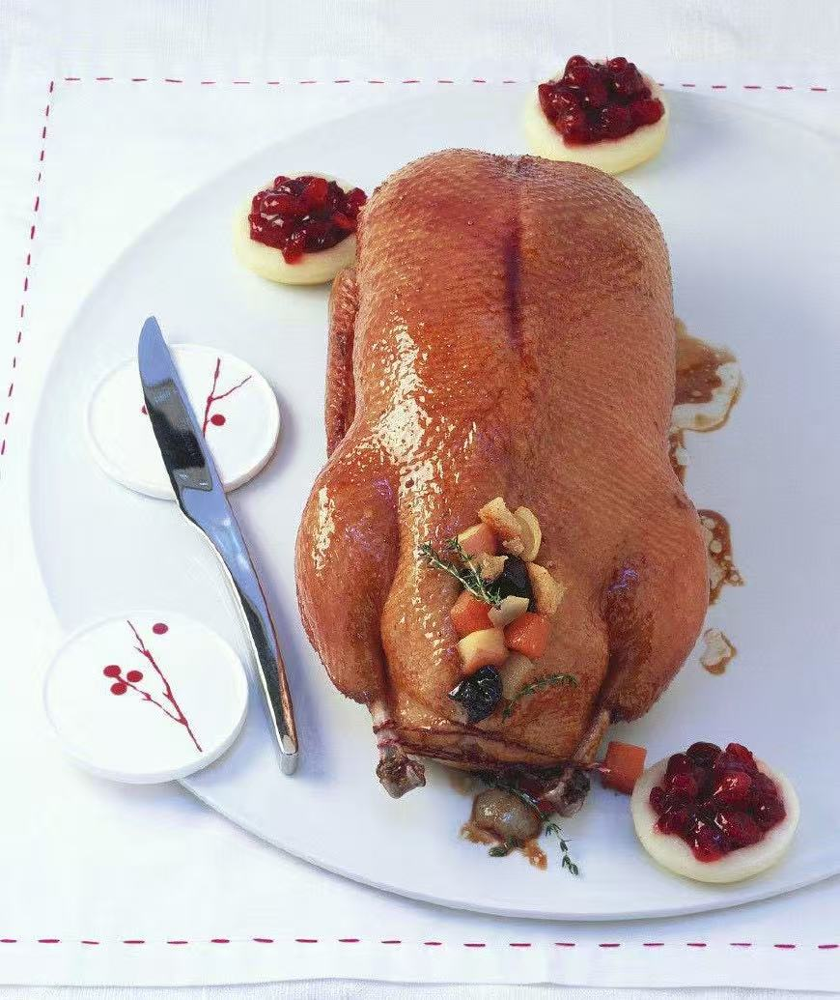
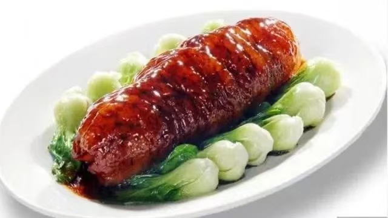
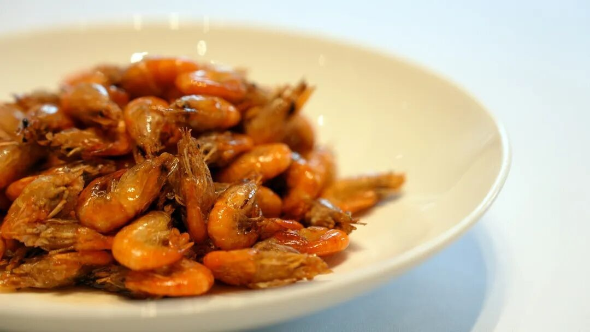
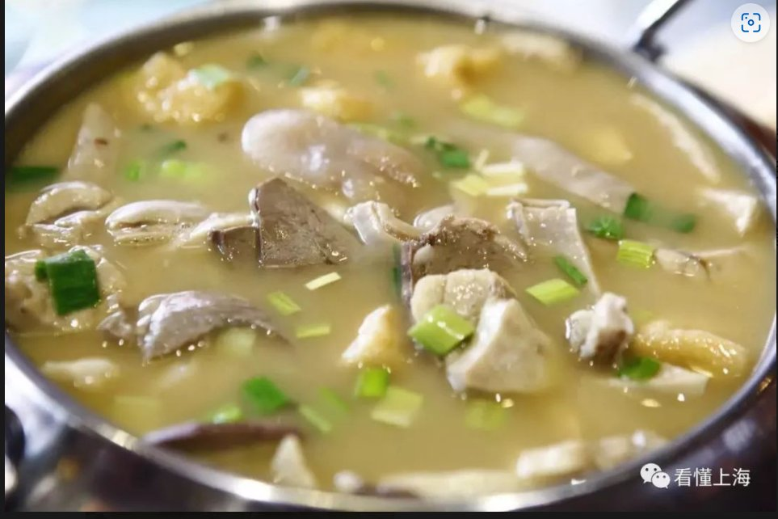

Shanghai Cuisine — Regional Food Guide
A comprehensive guide to the authentic flavors, signature dishes, and culinary traditions of Shanghai.
Signature Dishes of Shanghai

Eight-Treasure Duck (Babao Ya)
Shanghai's banquet showstopper — a whole duck deboned, stuffed with 'eight treasures' of glutinous rice, diced ham, chestnuts, mushrooms, lotus seeds,

Shrimp Roe Braised Sea Cucumber (Xiazi Da Wushen)
The crown jewel of Benbang cuisine — a massive dried sea cucumber, rehydrated over 3-4 days, then braised in a dark, glossy sauce of red-cooked pork b

Oil-Blasted River Shrimp (Youbao Hexia)
The quintessential Benbang quick-fry — live local river shrimp, no larger than a fingertip, flash-fried at extreme heat for exactly 15 seconds until t

Fermented Grain Hot Pot (Zao Botou)
Shanghai's ultimate nose-to-tail dish — a clay pot of pork lung, stomach, intestine, liver, and trotters slow-simmered for 3 hours, then finished with
Food Culture of Shanghai
The cuisine of Shanghai reflects its geography, climate, and rich cultural heritage. Local ingredients, traditional cooking methods, and centuries of culinary evolution have created a distinctive food culture that is recognized throughout China and the world.